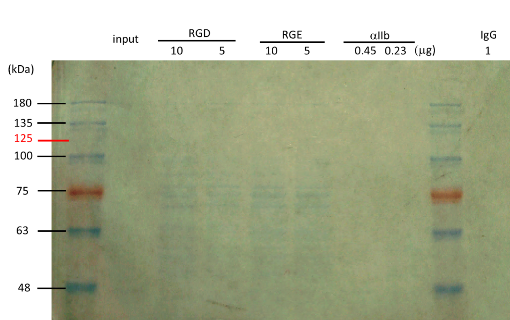
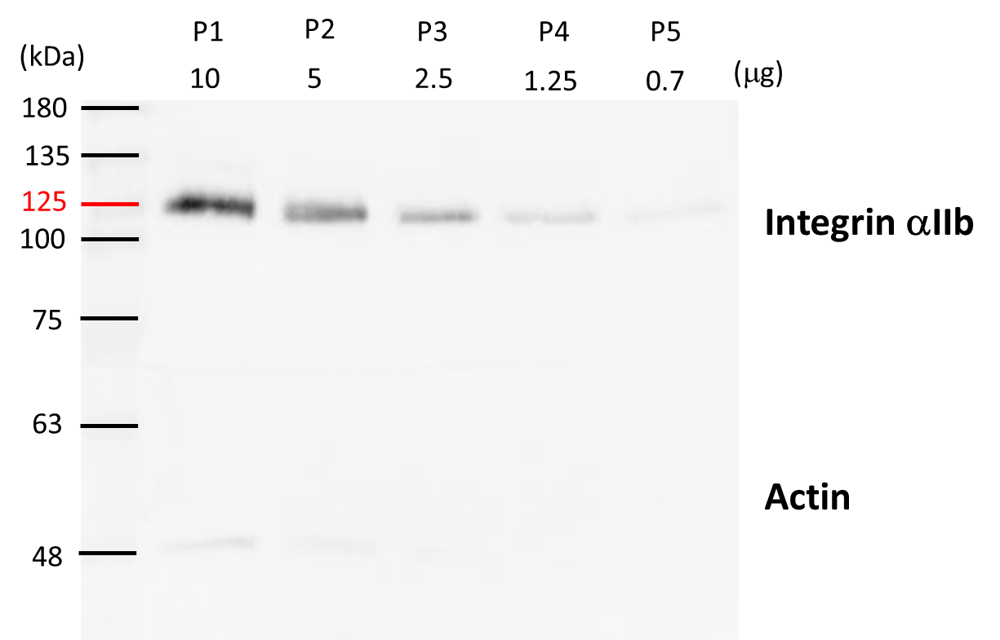
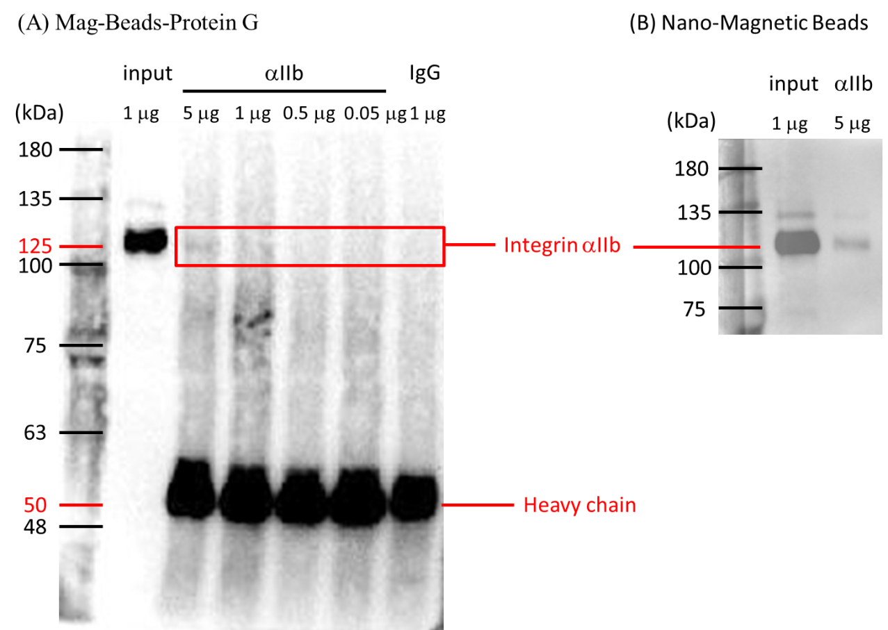
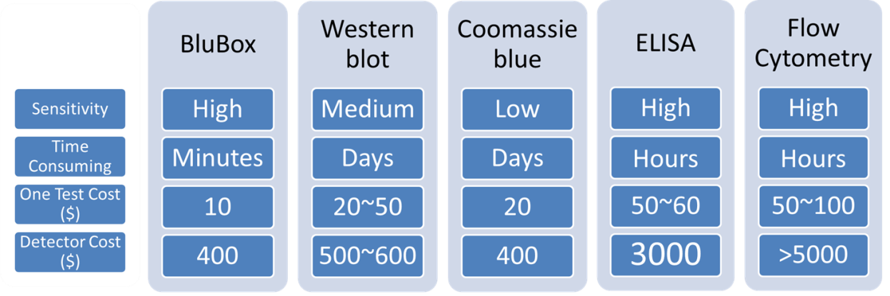

Project
Nano-Magnetic Beads for integrin receptor (αIIbβ3) detection
Abstract
Rapid detections of viral loads and cancer biomarkers in blood samples are highly demanded in clinical examination. Blusense Diagnostic has developed a portable and affordable device, BluBox, using immunoassay combined with magnetic nanoparticle technology for rapid and time-saving examination of dengue viruses in blood. To expand the possible usage of BluBox in detection of exosome containing cancer markers, in this project, we aimed to establish a platform by detection of platelet integrin αIIbβ3 as a model. We synthesized Nano-Magnetic Beads and conjugated with antibodies against platelet integrin αIIb or recombinant proteins of rhodostomin (RHO), a snake venom, which can specifically bind to αIIbβ3 receptors. Compared with western blot analysis and EIA measurement, we demonstrated that BluBox detector had a higher sensitivity in detecting platelet αIIbβ3. In the future, we will further develop a BluBox-based system for detection cancer cell markers in blood, saliva, or urine.
Background
Table 1 Integrin and integrin ligands found in exosomes

Adapted from Cancer (2017)
Two major components, nucleic acids, and proteins are the common targets for clinical examination of viral and bacterial infections as well as many inherited diseases and cancers. For protein detection, RIA (radioimmunoassay) and EIA or ELISA (Enzyme-Linked ImmunoSorbent Assay) are commonly used in clinic while WB (western blot) is used largely in laboratory. Blusense Diagnostic [3], a joint company of Denmark and Taiwan which is located in the LinKou Science Park nearby Chang Gung University [4] campus, has developed a new device, BluBox, for detection of Dengue viruses. The device combines immunoassay and magnetic nanoparticle technology to quantify the magnetic beads clusters when beads conjugated antibodies bind with viral particles in the magnetic field without adding extra chemicals. Such one-step detection requires only one drop of blood (less than 10 μl) and 8 minutes for knowing the amount of viral antigens present in the tested blood (see Fig 1, adapted from reference [5].

Figure 1. The principle of one-step nano-magnetic bead-based immunoassay(a) Scheme of nano-magnetic bead cluster formation after in the period of magnetic incubation. (b) Diagram of BluBox device. (c) Spectra of the normalized 2nd harmonic photodetector signal vs. frequency of the magnetic field excitation
After having visited the company and learned the fundamental principle of BluBox, we thought we may extend the usage of BluBox for rapid detection of cancer makers in liquid biopsies, particularly on exosomes containing markers for tumor metastasis [2, 6]. Our university has identified several cancer markers [7, 8], however, relevant reagents, antibodies against these biomarkers are not ready yet, furthermore, to obtain exosome samples from patients is not approachable. Therefore we set up a platform for detection platelet integrin αIIbβ3 as the first step toward the goal. 
The rationales are followings: 1) integrin αIIbβ3 is one of the most abundance receptors on platelet membranes, 2) antibodies against integrin αIIbβ3 are commercially available, and 3) platelets are anucleated discoid cells in size of 2-3 μm, which can be treated with Triton-X 100 to downsize to around one hundred nm near the size of exosomes or to less than hundred nm similar to the size of viruses.
Method
Platelet protein analysis by Coomassie Blue staining and western blot
Various numbers of platelets (ranging 1x107 to 1x109/ml) were lysed with SDS-PAGE buffer and subjected to SDS-PAGE analysis. The SDS gel was stained with Coomassie Blue or transferred onto a nitrocellulose paper. Nitrocellulose papers were incubated with anti-integrin αIIb antibody as the primary antibody and then probed with the second antibodies of donkey antibodies conjugated with HRP against rabbit IgG. Finally, the positive bands were developed by Bio-rad.
TEM examination of platelets treated with Triton-X 100
Platelets treated with or without 0.1% Triton-X 100 were loaded onto a formvar-coated copper grids. Samples were observed in a Joel electron microscope and the actual size of fragmented platelets was measured.
BluBox detection of integrin αΙΙb on platelets
Solution of nano-magnetic beads conjugated with integrin αIIb antibodies and IgG (1mg/ml) were both diluted by fifty folds. Platelet sample was lysed by RIPA lysis buffer, diluted into different concentrations. Five μl of the diluted platelet samples were mixed with 5 μl of the diluted nano-magnetic bead solution, loaded into a cartridge, and detected by BluBox.
Results
Platelet protein analysis
We have performed SDS-PAGE following by Coomassie Blue staining (Fig 2) or western blot (Fig 3) for detection of integrin αIIb. If we loaded total platelet lysate in 5 μg and examined SDS-PAGE with Coomassie Blue staining, no particular band could be identified.

Figure 2. Coomassie blue analysis of the integrin αIIb in the lysed platelets which were pull-down by GST-RGD and GST-RGE or anti-integrin αIIb antibody
The lysed platelets (5 μg) were pulled down by GST-RGD and GST-RGE or integrin αIIb antibodies with different concentrations (10 and 5 μg for recombinant rhodostomin; 0.45, 0.23 μg for antibody) which were conjugated with glutathione beads (RGD and RGE) and Mag-Beads-Protein G (integrin αIIb, IgG rabbit antibodies), respectively. Protein bands around 75 kDa in RGD and RGE lanes are probably derived from E. coli; an expected band (indicated with 125 in red) of integrin αIIb was not detected in Coomassie blue staining. Protein markers in kDa are indicated on left of gel.
However, western blot results show a specific band on 125 kDa, a migration position of integrin αIIb on gel. This band analyzed by western blot could not be detected if total protein platelet lysate was loaded in less than 0.7 μg.

Figure 3. Western blotting analysis of integrin αIIb in lysed platelets
The intact platelets were lysed in RIPA lysis buffer. The total protein concentration of platelets (P1 = 10 μg, P2 = 8 μg, P3 = 2.5 μg, P4 = 1.25 μg, and P5 = 0.7 μg) was loaded as indicated above the gel. The primary antibodies were anti-integrin αIIb antibodies and used dilution (1:1000) in 1X TBST buffer. Donkey antibodies conjugated with HRP against rabbit IgG were used as the secondary bodies for detection integrin αIIb (indicated by 125 in red). Actin (as indicated on right about 42 kDa) was used as the protein loading control. Protein markers in kDa are indicated on left of gel. The low sensitivity of western blot using the commercial antibody to detect integrin αIIb was around 0.5 μg of total platelet lysate.
We also performed immunoprecipitation following by SDS-PAGE and western blot analysis. Integrin αIIb bands at 125 kDa were also detectable, but if protein loaded less than 0.5 μg was not able to be detected by conjugate 0.9μg integrin αIIb antibodies or 5 μg IgG onto the Nano-Magnetic Beads (Fig 4). However, the intensity of the band is less than 10% of total input proteins, suggesting the immunoprecipitation efficiency is low. The sensitivity detected by Coomassie blue stain is even lower than IP western blot analysis. Nevertheless, we confirmed the commercial antibodies and platelet preparation are suitable for the following Nano-Magnetic Beads detection.

Figure 4. Western immunoblotting analysis of the integrin αIIb in the lysed platelets
The lysed platelets in different concentration (5, 1, 0.5, 0.05 μg) were pulled-down by anti-integrin αIIb antibodies which were respectively conjugated with (A) Mag-Beads-Protein G and (B) Nano-Magnetic Beads. The primary antibodies anti-integrin αIIb antibodies were used dilution (1:1000) in 1X TBST buffer. Donkey antibodies conjugated with HRP against rabbit IgG were used as the secondary bodies for detection of integrin αIIb (indicated by 125 in red). Input lane was a positive control indicated the position of integrin αIIb (125kDa). IgG rabbit antibodies were regarded as a negative control. The heavy chain signal of antibodies was shown at 50 kDa. Protein markers in kDa are indicated on left of gel. Due to the efficiency of immune-precipitation, only 5% of integrin from the total input was detected.
TEM examination of Triton-X 100 treated platelets
To mimic detection viral particles or exosomes, we had to reduce intact platelet to 30 nm~130 nm by detergent treatment. TEM results show the 0.1% Triton-X 100 treated platelets appear sizes ranging from 20 nm to 126 nm and average diameter of 58 nm (Fig 5). The lysed platelet sample was then used in BluBox detection for integrin amount.

Figure 5. TEM observation of platelets treated with 0.1% Triton X-100
Platelets were treated with 0.1% Triton X-100 to obtain small fragments of platelets, which were applied onto a copper mesh grid, and observed under a TEM magnified by 200K. The average diameter of individual fragments derived platelets (mimic exosomes secreted by cancer cells) was 48 nm.
BluBox detection
Results showed the BluBox detection of integrin on fragmented platelet membranes, using nano-magnetic beads (NMB) conjugated with integrin αIIb antibodies or control IgG, which showed little or no signal from IgG control group, in contrast, the signal detected by NMB conjugated with integrin αIIb antibodies was proportionally increased when higher amount of platelet samples were used (Fig 5).
| Total protein (ng) | anti- αIIb (BSD) | IgG (BSD) | |
|---|---|---|---|
| 500 | 4 | 3.7 | 0 |
| 25 | 4 | 3.7 | 0 |
| 12.5 | 0 | 0 | 0 |
Solution of nano-magnetic beads conjugated with integrin αIIb antibodies and IgG (1mg/ml) were both diluted by fifty folds. Platelet sample was lysed by RIPA lysis buffer, diluted into three different concentrations, and the protein concentration was measured. Five microliter of the three diluted platelet samples were mixed with 5 μl of the diluted nano-magnetic bead solution, loaded into a cartridge, and detected by BluBox. The total amount of protein loaded into the cartridge was 12.5, 50, and 500 ng, respectively.
Discussion
In this project, we demonstrated that nano-magnetic beads conjugated with anti-integrin αIIb antibodies can be used to detect platelet integrin αIIb successfully. The sensitivity obtained in this project did not reach the low limit of 25 ng/ml as reported by Antunes et al. [5]. One of possibility was we used one kind of coated beads. In the future, we can combine two types of NMB, one coated with anti-integrin αIIb antibodies and the other coated with recombinant protein rhodosomin to improve the detection sensitivity. 
After such improvement has been achieved, we can provide an alternative choice for clinical detection of functional integrin αIIb receptors in addition to conventional EIA and Flow Cytometry (see table 2 below). The great advantage using BluBox for clinical detection is for its low price of apparatus and easy handle, one-step detection and less amount of samples being used. In the future, we will modify the current binding ligands to be able to detect integrin-containing exosomes in blood, saliva, or urine for early detection of cancer migration.

Table 2 Comparison of various techniques for protein detection
References
[1] http://www.who.int/en/.
[2] Paolillo, M. and S. Schinelli, Integrins and Exosomes, a Dangerous Liaison in Cancer Progression. Cancers (Basel), 2017. 9(8).
[3] http://www.blusense-diagnostics.com.
[4] http://www.cgu.edu.tw.
[5] Antunes, P., et al.,Quantification of NS1 dengue biomarker in serum via optomagnetic nanocluster detection.Sci Rep, 2015. 5: p. 16145.
[6] Hurwitz, S.N., et al., Proteomic profiling of NCI-60 extracellular vesicles uncovers common protein cargo and cancer type-specific biomarkers. Oncotarget, 2016. 7(52): p. 86999-87015.
[7] Chen, C.L., et al., Comparative Tissue Proteomics of Microdissected Specimens Reveals Novel Candidate Biomarkers of Bladder Cancer. Mol Cell Proteomics, 2015. 14(9): p. 2466-78.
[8] Chiang, S.F., et al., Bone Marrow Stromal Antigen 2 Is a Novel Plasma Biomarker and Prognosticator for Colorectal Carcinoma: A Secretome-Based Verification Study. Dis Markers, 2015. 2015: p. 874054.
Acknowledgments
We would like to express our gratitude to Professor S J. Lo for his guidance and support, and to our Department Professors, Li-Man Hung, Sebastian D. Fugmann, Scott C. Schuyler, Chao Lan Yu, Shu Yuan Yang, and Sheng-Chieh Hsu for their critical comments on our project and oral presentation. We also like to thank the following professors and their lab members, Mu-Yi Hua, Ching-Ping Tseng, Li-Man Hung, Robert Y.-L. Wang, Yaa-Jyuhn Meir, Mei-Ling Cheng, and Sze-Cheng John Lo, for supplying materials and technical help. Thanks are due to Blusense Diagnostic for using their device of BluBox. A partial travel fund was supported by CGU.